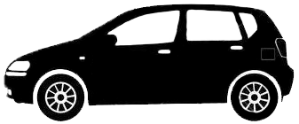
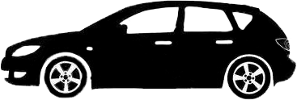
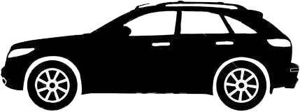
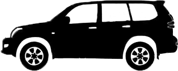

Любимый автомобиль достоин правильного ухода ухода
Полировка, Защита кузова
Класс 1

Автомобиль малого класса, отечественный авто.
Класс 2

Автомобиль среднего класса, хечбек.
Класс 3

Автомобиль бизнес-класса, кроссоверы, универсал.
Класс 4

Автомобиль представительского класса, микроавтобусы.
| № | Услуга | Описание | класс 1 | класс 2 | класс 3 | класс 4 |
|---|---|---|---|---|---|---|
| 1 | Полировка кузова автомобиля с пробегом | Полировка кузова до идеального состояния с минимальным истиранием лака | 5000р | 7000р | 8000р | 10000р |
| 2 | Полировка кузова автомобиля нового | Полировка кузова до идеального состояния.Удаление транспортировочной консервации и легких поврежденией при транспортировки | 2500р | 3000р | 4000р | 4500р |
| 3 | Обработка кузова автомобиля жидким стеклом на 1 год | Защита кузова от мелких царапин и хим.реагентов в течении года. В услугу входит подготовка кузова к нанесению защитного состава и нанесение. | 12000р | 14000р | 16000р | 18000р |
| 4 | Обработка кузова автомобиля жидким стеклом(нанокерамика) на 3 год | Защита кузова от мелких царапин и хим.реагентов в течении трех лет. Обработка включает в себя подготовку кузова,нанесение 2 слоев нанокерамики,обработку стекл автомобиля составом анти-дождь,чистка и защита хромированных элементов,полировка фар. | 14000р | 17000р | 23000р | 27000р |
| 5 | Нанокерамическое покрытие на 5 лет | Услуга включающая в себя все по максимуму. Обработка кузова самым прочным составом в 3 слоя, подготовка кузова,защита всех стекл, фар, хрома, обработка колесных дисков. | 20000р | 25000р | 30000р | 35000р |
| 6 | Обработка передней полу сферы антидождем. | Предварительно производится чистка стекл от жирных не смывающихся налетов и других загрязнеий.Лобовое стекло,переднии боковые стекла и зеркала. | 700р | 1000р | 1500р | 2000р |
| 7 | Обработка всех стекл антидождем | Предварительно производится чистка стекл от жирных (не смывающихся налетов) и других загрязнеий.Обработка гидрофобным покрытием Антидожд,антилел. | 1500р | 2000р | 2500р | 3000р |
| 8 | Чистка колесных дисков специальным составом | Химичиская чистка удаляет инародные вкрапления разного рода | 800р | 1000р | 1200р | 1400р |
| 9 | Защита колесных дисков до 2лет. | Обработка колесных дисков нанокерамикой на 2 года. Придает дискам насышеный цвет,защищает от агрессивного воздействия реагентов,облегчает очистку от колодочной пыли, защищает от накипи и выцветания. | 2000р | 3000р | 4000р | 5000р |
| 10 | Очистка хромированы элементов специальным составом | Бережно очищает хромированные элеметы при этом добавлая невероятный глянец | 1000р | 2000р | 3000р | 3500р |